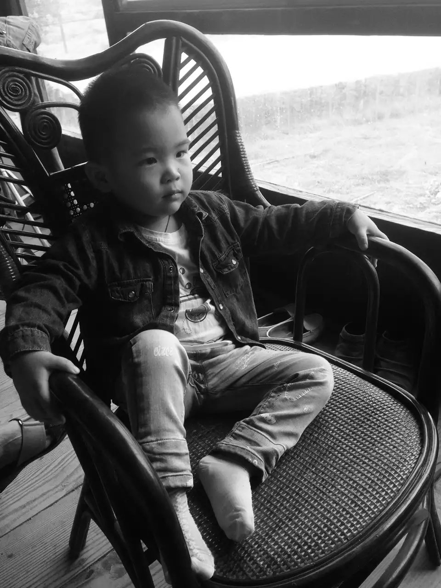
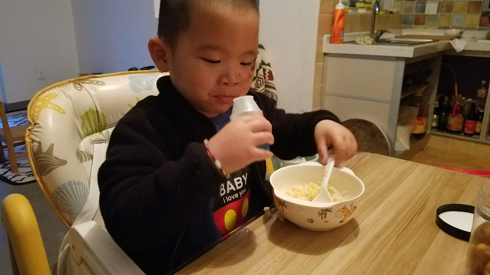
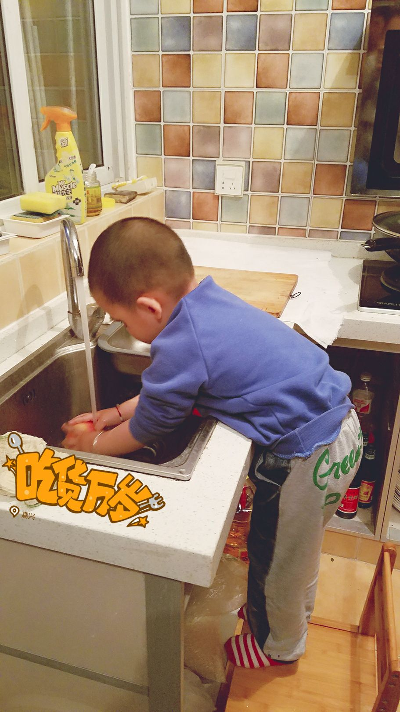
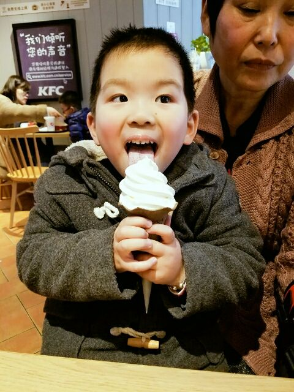

介绍:
问题
答案新建于:2017-05-01 12:22:49 AM，更新于2017-08-23 07:32:53 PM
没想到我们家番茄君能在知乎圈粉这么多“迷姐”
真心感谢大家对我的支持，很多人担心离婚对孩子的成长不利，其实我一直觉得对孩子不利的不是离婚这件事，而是大人离婚后对孩子的态度。当初之所以走到离婚这一步，也是考虑到不幸福的婚姻，可能对孩子带来更不好的影响，必尽我和他爸都不是演员，没办法在孩子面前几十年如一日地装恩爱……
当初我坚持要番茄跟着我混……是跟着我生活，主要是因为他爸平时真的很忙，时不时就出差，有时还要出国。当爸的意思是儿子跟他姓，跟着他理所应当，他没空可以给爷爷奶奶带，何况还有孩子的叔叔和姑姑们在。这我是无法认同的，因为我觉得陪伴孩子成长是件非常非常非常重要的事情，生而不养不如不生，既然生了就得负责，养孩子真不是钱能解决的。
我离婚时，找过好几个律师，他们统一建议我放弃抚养权，这样他们可以为我争取更多的资产，而且趁着年轻还能再嫁。。。我记得那一天，我从律师楼里回来，天下着大雨，我一边开车一边放声大哭，天秤两端一端放着自己的人生，一端是我刚出生的儿子。我哭，不是因为我难以决择，而是我只能选儿子，就是替自己委屈……TMD老娘这辈子都没怎么好好享受当人妻的滋味，你小子要是以后不好好孝敬……孝顺我，我就在你婚礼上循环播放裸照。
番茄他爸对番茄其实也挺好的，几乎每个周末都来看他，儿子幼儿园的家长活动也都尽量抽时间参加。虽然我们不再爱着彼此，但我们都很爱这个孩子……
最后，关于“霸道小总裁”这事，坐姿绝逼天生的啊！下面是他两岁半时的照片。
-----------------以下原文---------------------------------------------
就是这货！！！
算上他在我肚子里的日子，刚好5年！ 自从有了他，我悲惨的人生就拉开了序幕！孕期各种折腾我就忽略不计了，他简直就是五行克妈啊！自打他降临，我和他爸就开始分居，没多久就离婚，然后我就失业了。 没钱没房没老公，拖着个刚满一岁的儿子，就问你，谁还敢娶我？要是有，我敬你是条汉子！ 要问我坚持了什么？ 我坚持再苦再难也不和他分开，哪怕穷途末路，也不拿工作和生存为由，而去别的城市打拼和他分开。 哪怕他爸拿着房子和钱来交换，我也不放弃对儿子的抚养权。 我坚持每天都和他说：我爱你。 我坚持最大的负责是陪伴他成长。 我坚持让自己每天都要变得强大，让他成年后有机会回答谁是你最崇拜的人时，他说那个人是我妈！历尽艰辛还能貌美如花(*๓´╰╯`๓)♡
这种晒娃的好机会，我怎么可以放过？
